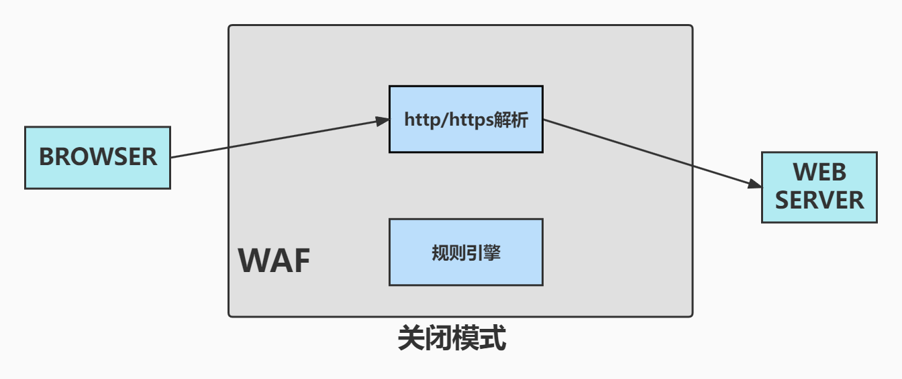
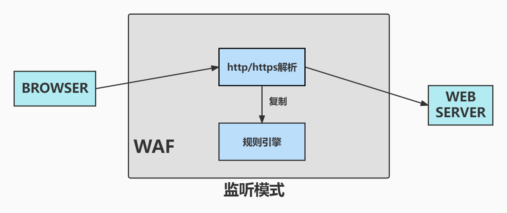
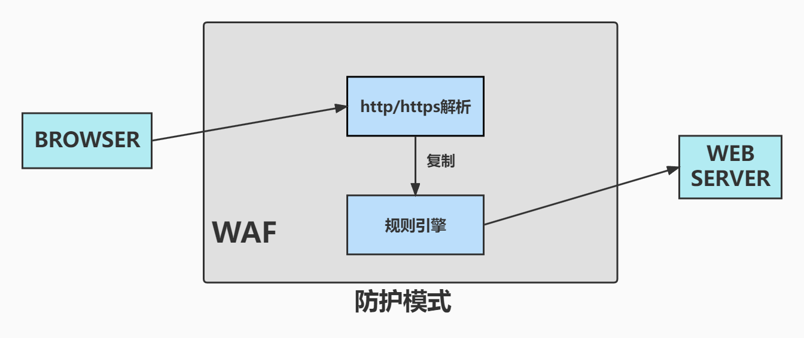

WAF工作模式
由于WAF一般和业务系统是串联的，并且还是部署在业务系统前面。如果采用反向代理部署模式，假设WAF出现故障，那么会导致单个或者多个站点不可用。这意味着WAF的功能必须是随时可以关闭的。一个WAF往往需要同时防护多个站点，如果把整个WAF关闭，是会导致整体业务群都失去保护。所以，WAF的工作模式必须有对站点有随时关闭的模式。
当WAF有新功能或者有新策略发布，是不可以立马把新功能或新策略对现有站点进行防护，需要一段时间来进行观察，看功能是否可用或策略的命中率，漏判率和误判率。如果贸然上线的话，很容易背锅走人的。所以，WAF的工作模式必须有监听模式。
不用说，WAF工作模式当然要有防护模式。这是WAF存在的意义。
那么，这些工作模式如何设计呢？？
先从关闭模式看起，对某个站点使用关闭模式，到这个站点的流量就感受不到WAF的存在。一般的做法，是解绑域名，再到web服务上绑定该域名。这种做法优缺点如下：
优点
- 由于web服务和WAF完全分享，WAF的故障不会影响到web服务。
- 少了WAF这个中间节点，web服务的响应速度不受影响。
缺点
- 解绑和重绑，涉及到接入备案过程，流程较长，生效时间较长。
- 原先隐藏在内网的web服务集群对公网开放，除了web应用本身的攻击面，还增加了主机层面的攻击面，增大了整体网络的攻击面。
关闭模式也有一种快速生效的实现方式。这种实现方式和监听，防护两种模式的实现很统一。
这种方式的优缺点如下：
优点
- 不需要进行域名解绑和重绑，生效时间快
- 不会增加整体网络的攻击面
缺点
- 流量还是要经过WAF，对web服务响应速度还是影响
- 流量要经过WAF，所以WAF的故障也会影响到web服务
由于一个IP可以对应多个域名，一个域名也可以对应多个IP，对针对每个域名来配置工作模式，WAF必须要获取到http请求的URL或头部的host字段。WAF解析完http/https，拿到了请求的域名，再根据域名的配置，决定是否送去过规则还是直接传递给web服务。所以，WAF的http/https模块解析要和规则引擎模块分开。
所以，WAF的关闭模式如下图：
同样，WAF的监听模式是既过规则，也会直接传递给web服务，大致如下图：
最后，WAF的防护模式是直接过规则，不会直接传递给web服务，大致如下图：
可见，这样的设计，会使得这三种工作模式在实现和原理上都非常统一。
本博客所有文章除特别声明外，均采用 CC BY-NC-SA 4.0 许可协议。转载请注明来自 JoyBoy！